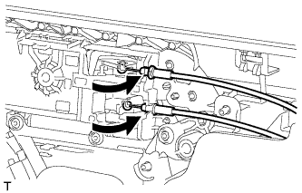

ЗАМОК ПЕРЕДНЕЙ ДВЕРИ > УСТАНОВКА |
| 1. УСТАНОВИТЕ ВНУТРЕННИЙ ТРОС ЗАМКА ЛЕВОЙ ПЕРЕДНЕЙ ДВЕРИ В СБОРЕ |
Установите внутренний трос замка передней двери в сборе.
Введите в зацепление 3 захвата.
| 2. УСТАНОВИТЕ ТРОС ДИСТАНЦИОННОГО УПРАВЛЕНИЯ ЗАМКОМ ЛЕВОЙ ПЕРЕДНЕЙ ДВЕРИ В СБОРЕ |
Установите трос дистанционного управления замком передней двери в сборе.
| 3. УСТАНОВИТЕ ЗАМОК ПЕРЕДНЕЙ ЛЕВОЙ ДВЕРИ В СБОРЕ |
Нанесите на рабочие поверхности трения замка передней двери универсальную консистентную смазку.
Установите новое уплотнение жгута проводов замка двери на замок передней двери в сборе.
 |
Вставьте запорный стержень замка передней двери в замок передней двери в сборе.
| *A | Для моделей без системы двойной блокировки |
| *B | Для моделей с системой двойной блокировки |
 | Сдвиньте |
Убедитесь, что запорный стержень надежно удерживается в замке передней двери.
Установите замок передней двери и закрепите его 3 винтами с помощью торцевого ключа "TORX" T30.
Подсоедините разъем.
| 4. УСТАНОВИТЕ КРЫШКУ НАРУЖНОЙ РУЧКИ ПЕРЕДНЕЙ ДВЕРИ С ЦИЛИНДРОМ ЗАМКА В СБОРЕ |
Установите крышку наружной ручки передней двери с цилиндром замка в сборе.
 |
Установите цилиндр замка передней двери и закрепите его винтом с помощью торцевого ключа "TORX" (T30).
 |
Вставьте пробку отверстия.
| 5. УСТАНОВИТЕ ЗАДНЮЮ НИЖНЮЮ РАМУ ПЕРЕДНЕЙ ЛЕВОЙ ДВЕРИ В СБОРЕ |
 |
Установите заднюю нижнюю раму передней двери и закрепите ее болтом, как показано на рисунке.
| 6. УСТАНОВИТЕ НАПРАВЛЯЮЩУЮ СТЕКЛА ЛЕВОЙ ПЕРЕДНЕЙ ДВЕРИ |
 |
Установите направляющую стекла передней двери.
| 7. УСТАНОВИТЕ СТЕКЛО ЛЕВОЙ ПЕРЕДНЕЙ ДВЕРИ В СБОРЕ |
Подсоедините провод к отрицательному (-) выводу аккумуляторной батареи.
Подсоедините главный переключатель электрических стеклоподъемников в сборе и сместите стекло передней двери таким образом, чтобы были видны места установки болтов стекла двери.
Отсоедините провод от отрицательного (-) вывода аккумуляторной батареи и снимите главный выключатель электрических стеклоподъемников в сборе.
 |
Вставьте стекло передней двери в панель передней двери вдоль направляющей стекла передней двери в направлении, указанном на рисунке стрелками, и в порядке, показанном на рисунке.
 |
Закрепите стекло передней двери в сборе 2 болтами.
| 8. УСТАНОВИТЕ КРЫШКУ ТЕХНОЛОГИЧЕСКОГО ОТВЕРСТИЯ ЛЕВОЙ ПЕРЕДНЕЙ ДВЕРИ |
Наклейте новую бутиловую ленту на панель передней двери.
 |
Проденьте трос дистанционного управления замком передней двери в сборе и внутренний трос замка передней двери в сборе через новую крышку технологического отверстия передней двери.
| *1 | Контрольная точка |
Закрепите крышку технологического отверстия передней двери, используя контрольные точки на панели передней двери.
 |
Установите 2 зажима.
Вверните болт, чтобы закрепить жгут проводов передней двери.
| 9. УСТАНОВИТЕ ВНУТРЕННИЙ УПЛОТНИТЕЛЬ СТЕКЛА ЛЕВОЙ ПЕРЕДНЕЙ ДВЕРИ |
 |
Установите внутренний уплотнитель стекла передней двери.
| 10. УСТАНОВИТЕ ПАНЕЛЬ ОБЛИЦОВКИ ЛЕВОЙ ПЕРЕДНЕЙ ДВЕРИ В СБОРЕ |
|  |
Подсоедините трос дистанционного управления замком передней двери в сборе и внутренний трос замка передней двери в сборе.
Подсоедините 2 разъема.
Для моделей с запоминающими устройствами сидений:
Подсоедините разъемы.
 |
Закрепите панель облицовки передней двери с помощью 4 захватов на внутреннем уплотнителе стекла передней двери, как показано на рисунке.
 |
Введите в зацепление 12 фиксаторов и держатель панели облицовки передней двери, чтобы установить панель облицовки передней двери.
Вверните 3 винта.
| 11. УСТАНОВИТЕ ЛЕВУЮ НАКЛАДКУ ВЕРХНЕГО ПОРУЧНЯ |
 |
Введите в зацепление 8 захватов и установите облицовку верхнего поручня.
| 12. УСТАНОВИТЕ ДЕРЖАТЕЛЬ ВНУТРЕННЕЙ РУЧКИ ЛЕВОЙ ДВЕРИ № 2 |
 |
Введите в зацепление 3 захвата, чтобы установить оправу внутренней ручки передней двери.
| 13. УСТАНОВИТЕ ОБЛИЦОВКУ КРОНШТЕЙНА НИЖНЕЙ РАМЫ ЛЕВОЙ ПЕРЕДНЕЙ ДВЕРИ |
Введите в зацепление 2 захвата, чтобы установить облицовку кронштейна нижней рамы передней двери.
| 14. ПОДСОЕДИНИТЕ ПРОВОД К ОТРИЦАТЕЛЬНОМУ (-) ВЫВОДУ АККУМУЛЯТОРНОЙ БАТАРЕИ |
| 15. ПРОВЕРЬТЕ КОНТРОЛЬНУЮ ЛАМПУ АВАРИЙНОГО СОСТОЯНИЯ SRS |
Проверьте контрольную лампу аварийного состояния SRS (Нажмите здесь).